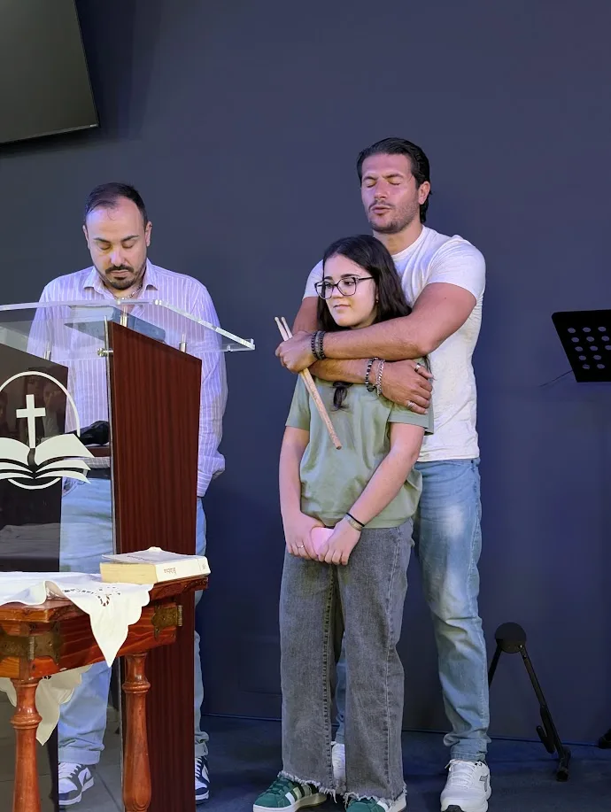

Vita cristiana · Preghiera
La pace che supera ogni intelligenza
Tre passi da Filippesi 4 per quando l'ansia bussa alla porta
Riflessioni, studi e storie per vivere la fede in famiglia, al lavoro e nelle domande di tutti i giorni.
La fede nella vita di tutti i giorni: in famiglia, al lavoro, nelle relazioni.
Il cuore del Vangelo: chi è Gesù, cosa ha fatto per noi e la speranza che ci dà.
Studi biblici e risposte chiare su cosa crediamo.
Uno sguardo cristiano sulle domande e sui fatti di oggi.
Notizie, storie e momenti della comunità di Fiume di Vita.

Tre passi da Filippesi 4 per quando l'ansia bussa alla porta
Nessun articolo in questa sezione, per ora.